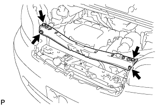
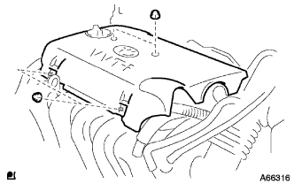
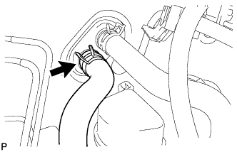
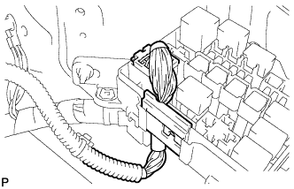
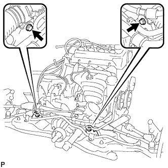
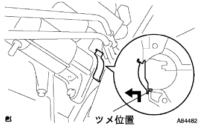
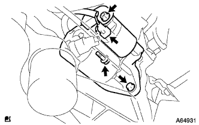
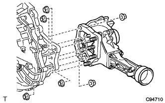
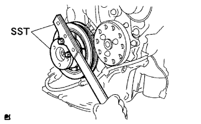

Remove partial engine ASSY (1NZ-FE (4WD)) |
| 1. Fuel leakage prevention work |
reference)| 2. Remove the front tire |
| 3. Engine undercover RH removal |
Remove two bolts and two screws.
Remove the nut and remove the engine undercover RH.
| 4. Engine undercover LH removal |
Remove two bolts and two screws and remove the engine and cover LH.
| 5. Cooling solution (Toyota genuine super LLC) extract |
Open the radiator kayatsu.
Loosen the radiator dollen cock plug and extract the cooling solution.
| 6. Pull out the automatic trance axleflood |
Remove the drain plug and gasket and extract the fluid.
Tighten the drain plug via a new gasket.
| 7. Remove the battery |
Remove the two nuts and remove the battery clamp and the accelerator cable stay.
Take off the battery.
Take off the battery tray.
| 8. Air cleaner ASSY removal |
Remove the air cleaner kit and air cleaner hose No.1.
Remove the air cleaner fillyer errage.
Remove the four bolts and remove the air cleaner case, the No.1 air cleannine rets and the air cleannine Retsu.
| 9. Radiator Inlet House Remove |
Remove the clamp and remove the radiator inlet hot.
| 10. Radiator outlet hole removal |
Remove the clamp and remove the radiator outlet hot.
| 11. Oil cool linelet hole cut off |
Remove the clamp and disconnect the oil cool line lettuce hose.
| 12. Oil Cooler Outlet House Cut |
Remove the clamp and separate the oil cooler outlet hot.
| 13. Radiator Grill W/Radiator Support Seal UPR |
Use the clip resover to remove the six clips.
 |
Paste the protective tape around and on the radiator support seal UPR and the radiator support seal UPR.
Use a flathead screwdriver with a protective tape to remove the support seal behind the vehicle with the three claws in the figure.
Lift the radiator support seal UPR and remove the radiator grilled claws from the gaps.

Check that the claws are off and remove the radiator grill.
Remove the radiator support seal UPR.
| 14. Food rock ASSY removes |
 |
Remove the three bolts and remove the food rock ASSY.
Separate the hood rock control cable ASSY from the food lock assembly.
| 15. Food rock support SUB-ASSY |
 |
Remove the four bolts and clips and remove the food rock support SUB-ASSY.
| 16. Remove the food rock support brace |
Cut the clamp of the food lock control cable ASSY.
|  |
Remove the four bolts and remove the food rock support brace.
| 17. Radiator support SUB-ASSY UPR is removed |
 |
Separate the horn ASSY connector and clamp.
Remove the four bolts and clips and remove the radiator support SUB-ASSY UPR.
| 18. Radiator Asset |
Cooling fan motor connector and wire harness clamp are separated and radiator ASSY W/Fanshuld is removed from the vehicle.
| 19. Cylinder head cover No.2 |
|  |
Remove the four nuts and remove the cylinder head cover No.2.
| 20. Accelerator control cable ASSY disconnection |
Loosen the nut and separate the accelerator control cable ASSY from the accelerator control cable braketto.
| 21. Column shift transmission control cable ASSY disconnection |
 |
Remove the nut and separate the control cable from the control shaft lever.
Remove the clip and separate the control cable from the control bracket.
Separate the control cable from the control cable support.
| 22. Union toe check valve hose is removed |
Separate the Union toe check valve hose from the booster vacuum tube.
| 23. Hita Water Hose Inlet A Cut off |
|  |
Cut the Hita Water Hose Inlet A from the radiator heater unit.
| 24. Hita Water Hose Outlet A Cuts |
 |
Separate Hita Water Hose Outlet A from the radiator heater unit.
| 25. Fuel tube SUB-ASSY disconnection |
 |
Remove the fuel pipe clamp No.1.
 |
Cut the fuel tube connector and fuel pipe.
| 26. Fan & alternator V belt removed |
 |
Loosen the adjustment bolt A and the fixing bolt B.
Loosen the tension of the V belt and remove the V belt.
| 27. Cooler compressor w/magnet clutch ASSY |
Cut the connector.
Remove the four bolts and separate the compressor ASSY.
| 28. Wire harness cut off |
|  |
Take off the club box.
Cut the engine wire from the engine control computer and junction block.
Pull out the engine wire into the engine room.
Remove the connector and clamp from the engine room junction block and separate the wire harness.
 |
Remove the bolt and disconnect the engine room wire harness earth wire.
Cut off all wire harness and connector to make sure that the wire harness is not connected between the body and the engine.
| 29. Steering column hole cover plate is removed |
 |
Sprinkle two clips and remove the steering column hole cover plate.
| 30. Steering sliding York SUB-ASSY disconnection |
 |
Attach the seat belt so that the steering wheel does not rotate.
 |
Loosen the bolts on the column side (A) of the sliding yoke.
Remove the bolt on the gear side (B) of the sliding yoke.
Mark the sliding yoke and the interimide shaft, and separate the sliding yoke.
| 31. Remove the oxygen sensor |
reference)| 32. Steering column hole cover SUB-ASSY No.1 Cut off |
 |
Remove the clip A and separate the hole cover No.1 from the body.
| 33. Exhaust pipe ASSY CTR removed |
Remove two nuts and two bolts.
Remove the two exhaust pipe support and remove the exhaust pipe ASSY CTR.
Remove two gaskets.
| 34. Remove the propeller shaft ASSY |
Mark the propeller shaft asser and propelline thimidiite shaft ASSY.
Remove four bolts, washer and nuts each, and separate the propeller shaft ASSY from the interimide shaft ASSY.
| *a | Marked mark |
 |
After removing the propeller shaft ASSY, insert the SST into the extension housing.
| 35. Front axle shaft nut LH removed |
 |
Set the SST according to the grooves of the front drive shaft asser LH, and use a hammer to solve the bark.
Use a socket wrench (30mm) to remove the front axle hub nut LH.
| 36. The front axle shaft nut RH is removed |
| 37. Speed sensor FR LH separation |
 |
Remove the speed sensor FR LH clip and the bolt of the flexible hose and separate the front shock absorber ASSY LH.
 |
Remove the bolt and separate the speed sensor FR LH from the steering knuckle.
| 38. Speed sensor FR RH separation |
| 39. Stabilizer bar cut separation |
Fix the front stabilizer bolt with a spanner (10mm) and remove the two nuts.
Remove four front stabilizer barceds reteners No. 1, 4 front stabilizer cushions, front stabilizer bar cushion retainer No.2 and front stabilizer bolt.
 |
The other side is removed in the same procedure.
| 40. Front suspension Lower arm No.1 LH separation |
Remove the cottal pin and remove the castle nut.
 |
Attach the SST to the front suspension Rower arm No.1 LH.
Use the SST to separate the ball joint of the rower arm from the steering knuckle.

| *a | Put a wrench in this position | - | - |
| 41. Front suspension Row arm No.1 RH cut off |
| 42. Tie rod end sub-assy LH separation |
Remove the cottal pin and remove the castle nut.
 |
Attach the SST to the tie rod end sub-assy LH.
Use SST to separate the tie rod end LH from the steering knuckle.

| *a | Put a wrench in this position | * B | Driving |
| 43. Tie rod end sub-assy RH separation |
| 44. Front axle assigned separation |
 |
Remove the two bolts and two nuts and separate the front axle Assul ASSY LH from the front shock absorber ASSY LH.
Use a plastic hammer to lightly hit the tip of the front drive shaft ASSY LH and remove the front drive shaft ASSY LH and the front axle ASSY LH.
 |
Press the front axle ASSY LH to the outside of the vehicle and pull out the front drive shaft ASSY LH from the front axle ASSY LH.
| 45. Front axle assigned separation |
| 46. Remove the front drive shaft ASSY LH |
 |
Remove the SST to the position of the figure on the front drive shaft ASSY LH.
| 47. Front drive shaft ASSY RH removed |
 |
Press the bearing bracket hole napping ring with a square axis flather and remove it from the bearing bracket.
Remove the No. 1 drive shaft bearing bracket bolt.
 |
Remove the front drive shaft ASSY RH from the drive shaft bearing bracket.
| 48. Engine ASSY W/Transxle removes |
 |
Set the height adjustment type and plate lift attachment and set the engine lifter.
 |
Remove 5 bolts and nuts and remove the engine mounting insulator RH.
 |
Remove the two bolts and separate the engine mounting insulator LH.
 |
Remove the four bolts and remove the front suspension Menbarin Housing LH and RH.
 |
Remove the four bolts and remove the engine ASSY W/Transxle and the front suspension cross member from the vehicle.
| 49. Bane pump ASSY disconnection |
 |
Remove the vane pump V belt.
Loosen the fixing bolt A and bolt B for adjustment.
Remove the V belt by loosening the tension of the V belt.
Cut the connector and clamp.
 |
Remove the two bolts and cut the vane pump ASSY from the engine.
| 50. Power steering link Assemble |
|  |
Remove the two bolts and remove the power steering link Assy W/Vane pump.
| 51. Front suspension cross member SUB-ASSY |
Remove the bolt and connector and remove the radio setting capacitors and oxygienesensen wiring brackets.
 |
Attach the engine hanger with a bolt to the point in the figure.
| Product name | Part number |
| Engine hanger | 12281-21010 |
| bolt | 91642-81025 |
Use engine ring devices and chain blocks to hold the engine ASSY W/Transxle and front suspension cross member.
Remove the through bolt of the engine mounting insulator RR and engine mounting bracket RR and remove the front suspension cross member.
| 52. Exhaust pipe ASSY FR removes |
Remove two bolts and two springs and remove the exhaust pipe ASSY FR.
| 53. Remove the flywheel housing side cover |
|  |
Push up from the bottom to remove the slickness, and remove the flywheel housing cover.
| 54. Starter ASSY removes |
|  |
Turn over the terminal.
Remove the nut and remove the 30 terminals.
Remove the two bolts and remove the starter ass.
Cut the connector.
| 55. Remove the wire harness |
 |
Remove the bolt and remove the air cleaner bracket.
Remove the bolt and remove the wire harness clamp from the automatic trance axle.
| 56. Cut the connector |
 |
Separate the speedometer sensor connector, transmission wire catnector, neutral start switch connector and Revolution Sensor Conector.
| 57. Step -out engine mounting bracket RR |
 |
Remove the three bolts and remove the engine mounting bracket RR.
| 58. Maniholdo support bracket removal |
 |
Remove the three bolts and remove the manifold support bracket.
| 59. Transfastifuna plate CTR removed |
 |
Remove the five bolts and remove the transfasifna plate CTR.
| 60. Transfirty Funa Plate RH removal |
 |
Remove the five bolts and remove the transfasifna plate RH.
| 61. Transfer ASSY removed |
Remove 6 nuts.
|  |
Remove the transfa ASSY from the Transxle ASSY.
| 62. Automatic Transx Axle ASSY is removed |
 |
Remove six torque converter set bolts.
 |
Remove the seven bolts and remove Transxle ASSY from the engine.
| 63. Drive plate & ring gear SUB-ASSY |
|  |
Use SST to fix the crankshaft Dampa.
 |
Remove the six bolts and remove the drive plate.
| 64. Ignition coil No.1 |
 |
Remove the four bolts and remove 4 1 ignition coil.
| 65. Alternator ASSY removes |
 |
Take off the terminal cap.
Separate the connector and harness clamp.
Remove the nut and remove the B terminal terminal.
 |
Remove the bolt A and nuts and remove the fan belt agasting bar.
 |
Remove the fixed bolt B and remove the alternator.
| 66. Intake manifold removal |
 |
Remove the two bolts and remove the vacuum tube for the brake booster.
Separate the wire harness from the intake manly hold.
In the order of the figure, remove 3 bolts and two nuts, and remove the intake manly.
Remove the intake manifold tsu head gasket from Intake Mani Hold.
| 67. Remove the oil level gauge guide |
Take off the oil level gauge.
Remove the bolt and remove the oil level gauge guide.
| 68. Water bypass pipe No.1 removal |
Remove two bolts and two nuts, and remove the water bypass pipe No.1.
| 69. Remove the water inlet |
Remove the two nuts and remove the water -inlet w/radiator outlet hot.
| 70. Remove thermostat |
Remove the thermostat w/gasket.
| 71. Engine oil pressure switch ASSY removal |
Cut the connector for oil pressure switch.
Use a deep socket wrench (24mm) to remove the oil pressure switch.
| 72. Remove the knock control sensor |
 |
Cut the knock control sensor connector.
Remove the nut and remove the knock control sensor.
| 73. E.F.I. Water Tenpalacha Sensor |
 |
Use a deep socket wrench 19mm to remove the E.F.I. Water Tenpalacha Sensor and gasket.
| 74. |
Cut the clamp and connector.
 |
Use SST to remove the Kunenhe sensor.
| 75. Exhaust manifold Heat Insulator No.1 |
 |
Remove the four bolts and remove the exhaust manifold heat insulator No.1.
| 76. Exhaust manlyd removal |
 |
Remove 3 bolts and two nuts and remove the exhaust manifold.
Remove the exhaust manifold tsu head gasket.